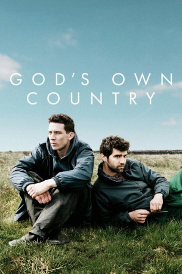

#8152 God's Own Country
 
 IMDB-Wertung: 7.7 / 10
IMDB-Wertung: 7.7 / 10  Tomatometer: 97
Tomatometer: 97  Metascore: 85
Metascore: 85 
Der 24-jährige Johnny Saxby (Josh O’Connor) führt kein glückliches Leben: Das Leben auf der Schafsfarm seiner Familie ist karg, die Arbeit hart und eintönig und das Verhältnis zu seinem kranken Vater Martin (Ian Hart) und seiner unnahbaren Großmutter Deirdre (Gemma Jones) schlecht. Aus Frustration betrinkt sich Johnny jeden Abend in einem Pub in der Nähe seiner Heimat und hat ab und zu unverbindlichen Sex mit anderen Männern. Daran ändert sich zunächst auch nichts, als im Frühling der Saisonarbeiter Gheorghe (Alec Secareanu) aus Rumänien auf der Farm anfängt. Doch nach und nach kommen sich die beiden jungen Männer näher und verlieben sich ineinander. Vor allem Johnny fühlt sich zu Gheorghe hingezogen, doch ihre Beziehung wird dadurch beeinträchtigt, dass dieser am Ende der Saison eigentlich nach Rumänien zurückkehren muss…
Jahr: 2017
Dauer: 104 Minuten
FSK: 12
Land: England Studio: Salzgeber & Company MedienTonspuren: DD5.1 - ,
Untertitel:
Auflösung: 1080p (1920x1040) Größe: 5713 MB
Genre: Drama, Liebe
Regisseur: Francis Lee
Drehbuch: Francis Lee
Soundtrack: Dustin O'Halloran, Adam Wiltzie
Darsteller:
 Josh O'Connor als Johnny Saxby
Josh O'Connor als Johnny Saxby Gemma Jones als Deirdre Saxby
Gemma Jones als Deirdre Saxby Harry Lister Smith als Trainee Auctioneer
Harry Lister Smith als Trainee Auctioneer Ian Hart als Martin Saxby
Ian Hart als Martin Saxby- Alec Secareanu als Gheorghe Ionescu
- Liam Thomas als Glen
- Naveed Choudhry als Male Nurse
- Melanie Kilburn als Gloria
- Patsy Ferran als Robyn
- Moey Hassan als Taxi Driver
- Sarah White als Joy
- John McCrea als University Boy
- Alexander Suvandjiev als Young Farm Worker
- Stefan Dermendjiev als Bearded Farm Worker
Datei: X:\2017(G-M)\God's Own Country (2017, FSK12, 1920x1040).mkv seit 01.02.2018
Festplatte: HD 2017(A-Z)-2018(A-F)
 Es gibt insgesamt 148 Filme in der Gruppe '2017(G-M)'
Es gibt insgesamt 148 Filme in der Gruppe '2017(G-M)'